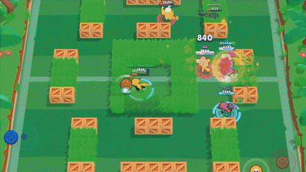

Game Maps
There are many different modes in Brawl Stars. You can make a team before starting game so you can play with your friends and choose which brawlers you want to use.
Showdown

Showdown is a battle royale event, in this mode, 10 players face against each other, and the last player standing wins the top trophy and gold awards, the game also features solo and duo match. The duo match allows payers to team up with party and friends to take on the challenge. In the game, players take advantage of treasure boxes for power-ups; players drop their boosters when they are eliminated, and engaging on the battle to gather most power-ups can be key to the victory. It gives a familiar battle royale feeling like Fortnite and PUBG; as the area shirks to limit battleground overtime, clouds of poison creeps from the edges to the centre.
Heist

Three brawlers on each team try to destroy each other team’s safe with 40,000 hit-points. Any side of the team that destroys the safe first wins. In case when the safe of teams are not entirely destroyed when the game timer ends, the safe with a higher percentage of health is given the victory.
Gem Grab

The gems pop out in the middle of the arena where players battle to gather the gleaming purple gem for the win. After players of any team have collected 10 gems, the countdown starts ticking, taking the game to a more intensive playground. The battle of the game can take a quick turn for either team as the gems are dropped on death. The game is a fully a teamwork strategy-based, and as players get to climb to higher ranking, strategic team role-play becomes more critical.
Bounty

Bounty mode is the only game like team deathmatch, no other objectives are available, and brawlers face off against each other to get the highest amount of kills. Stars are offered after every kill to keep count of the points players have accumulated in the match. A specific amount of time is set for the match, and the team with more stars is declared a winner at the end of the game.
Siege

In this intense game mode, three brawlers of each team collect bolts that are spawned in the middle of the arena, a timer is set before players could summon a gigantic robot, which is spawned from the back of the map, and will head towards the opponent’s turret. On both sides of the team’s base, a giant turret is set with 40,000 health. A boundary is marked with a visible line, and whichever brawlers cross the line, the turret attacks the opponent brawlers. The robot acts as the shield from the IKE turrets, and any team who destroys the turrets first wins. If both the teams are unable to destroy the turrets before the match timeout, the team with more turret’s health points wins.
Brawl Ball
In this match, the ball is placed in the middle of the field and both the team race against time to score 2 goals for the win. If the players are unable to score any goals or tied from 1-1 by timeout, they go to a final stage of the game called overtime. Extra play time of 1 minute is given to settle the score. The match is declared a tie if any team fail to score a goal.